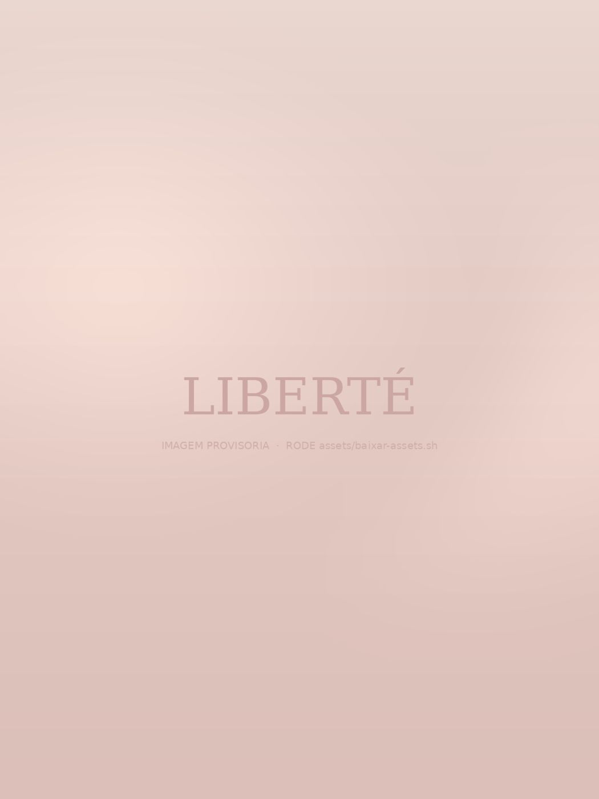
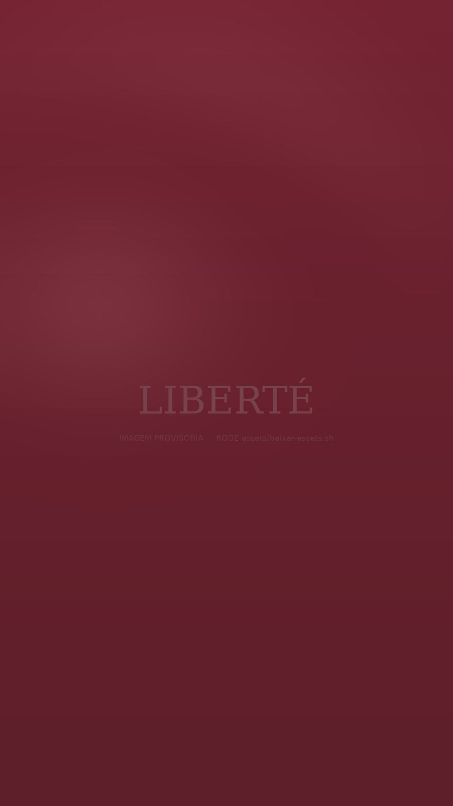

Rua Altino Arantes, 585 — Boulevard
Ribeirão Preto/SP
Ribeirão Preto · SP
Desde 2016
Uma escola de dança onde o currículo é inglês, o chão é de Ribeirão Preto e o diploma atravessa fronteiras.

Quem somos
O Liberté nasceu de uma inconformidade: a de ver crianças dançando durante anos sem nunca receber nada que comprovasse o que aprenderam. Aqui, cada aluna e cada aluno segue um currículo estruturado, avaliado e reconhecido fora do Brasil — o mesmo da Royal Academy of Dance, de Londres.
Isso muda tudo. Muda a forma como a aula é planejada, muda o que se cobra do corpo em cada idade, e muda o que a aluna leva quando sai daqui: não uma lembrança, um histórico. Do primeiro plié aos exames avançados, existe um caminho — e ele está escrito.
A credencial
A Royal Academy of Dance é a instituição britânica que, desde 1920, define como o ballet é ensinado e avaliado em 79 países. O Liberté adota integralmente o seu currículo — a mesma sequência de níveis, os mesmos critérios técnicos, os mesmos exames aplicados por examinadores enviados pela RAD.
A escada — toque para ver cada nível
O que se dança aqui
Passe o cursor sobre cada linha. Todas as turmas partem do mesmo princípio: técnica antes de coreografia, corpo antes de espelho.

O outro lado
Role para atravessar.
Lá dentro
Anatomia
Ninguém sobe na ponta porque quer. Sobe porque o pé, o tornozelo e o centro aguentam — e isso leva anos. A RAD só autoriza a ponta a partir de um nível específico do currículo, com avaliação individual. Gire o modelo e toque nas partes para entender o que avaliamos antes de liberar a primeira sapatilha.
Diferenciais
Seis motivos que não cabem num panfleto — e que a primeira aula experimental costuma confirmar em vinte minutos.
Turmas 2026
Filtre por modalidade, idade e dia. Toque em Quero esta e o WhatsApp abre com a turma já escrita na mensagem.
Valores
Matrícula anual, mensalidade e figurino de espetáculo cobrados à parte e informados por escrito antes de qualquer assinatura.
Irmãos têm 15% de desconto na segunda mensalidade. Planos semestrais e anuais com condição especial — consulte no WhatsApp.
Famílias
Quem ensina
Formação registrada na Royal Academy of Dance e atualização obrigatória a cada ciclo. Passe o cursor para ler a trajetória.
Registro
Três salas, piso flutuante profissional, barras duplas e espelho integral. Ar-condicionado em todas, vestiário e sala de espera para responsáveis com visão para o corredor.
Ver mais no InstagramDúvidas
Matrícula
A aula experimental é gratuita e sem compromisso. Traga roupa confortável — sapatilha a gente empresta.
Receba a abertura de turmas